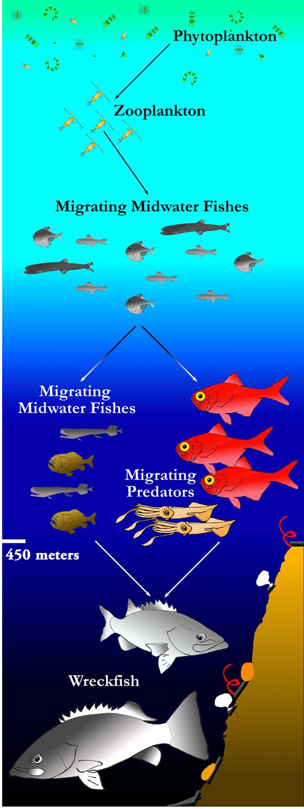

Aquatic ecosystems cover over two-thirds of the earth’s surface. They are composed by communities of plants and animals that depend on water. Marine and freshwater ecosystems are the major types of aquatic ecosystems. The latter have a much lower salt content than the former. Freshwater Ecosystems cover less than one percent of the earth’s surface but still host a big variety of life forms. Indeed, freshwater ecosystems include about 40% of all fish species.
Roaches and pikes are typical representatives of a prey-predator relationship in freshwater ecosystems. The common roach (Rutilus rutilus) is a freshwater water fish native to most parts of Europe. The roach often reaches no more than about 35 cm. It feeds on plant material, bottom dwelling (benthic) invertebrates and plankton. The northern pike (Esox lucius) is a species of carnivorous fish, which is typical of freshwaters of the northern hemisphere. Pikes might grow more than one meter in length and more than 20 kg in weight. They feed on smaller fish.
Typical representatives of autotrophic organisms in freshwater ecosystems are algae. As is the case with terrestrial plants, algae use sunlight to generate organic compounds. In stream food webs, food chains are based on algae. Most invertebrates are herbivores or detritivores. Fish are top predators. Birds and amphibians are also included among higher consumers in many cases. Many fish feed on stream invertebrates. A few birds might spear some large invertebrates that have avoided fish predation. Other birds might capture aquatic insects that have emerged from the stream.
Phytoplankton, primarily algae, comprise the base of a lake's food chain too. A diverse community of microscopic zooplankton occupies the upper layer of the lake. Zooplankton feeds on algae. If one can see clearly through the water of the lake, then zooplankton consume much of the algae. If the water of the lake is not clear, then algae are much more abundant.
Trophic levels in an aquatic ecosystem source: http://creationwiki.org/File:Food_web1.jpg